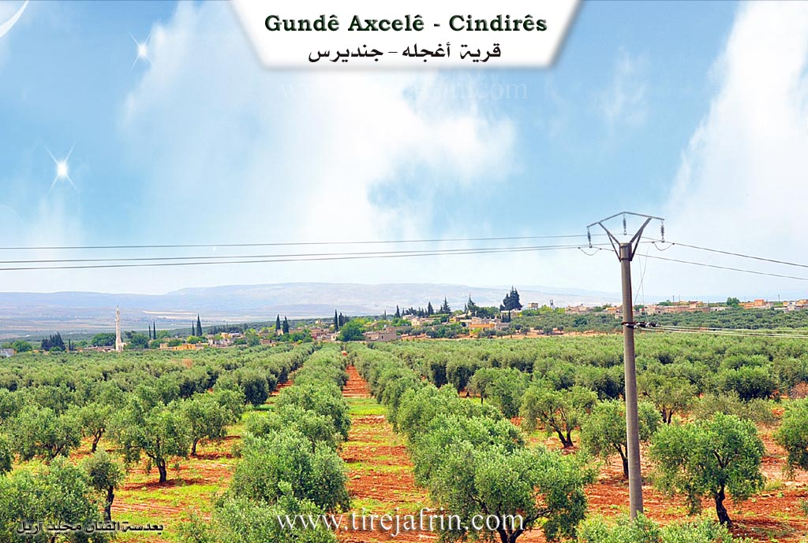
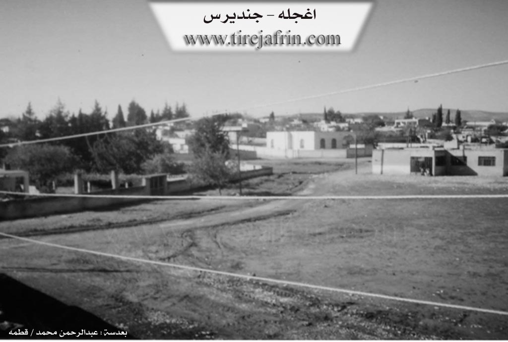

General Information
Nahiya (Subdistrict)
Cindires
Also Known As
Al-Bayada, Axcele, Axcelê, Aĝcelê, Aĝjaleh, Beyada, Oẍcela, آغجله, أغجله, البياضة, اغجله, Agh Jali, al-Bayda'
Tribes
Goçera, Gulîka, Kûsî, Omkî
Families, Clans, etc.
Mala Ebu Îbrahîm, Mala Ekrem, Mala Elî, Mala Elûş, Mala Elûşê, Mala Goçera, Mala Hisên, Mala Mehemedi, Mala Mehmûd, Mala Mihemedê Omer, Mala Osê Şêxke, Mala Seydo Şêxke, Mala Xelê, Mala Xelîl, Mala Şa'bê, Mala Şeibên

Photos


Basic Information about Axcelê
Source: Ax û Welat
Etymology: Axcelê derived from Turkish Axa Jele meaning white earth due to the soil color
Hills: Ceyran Tepe, Til Hisên
Shrines: Ziyareta Şêx Omer
Ruins: Erdê Xerbî
Wells: Cwano, Bîra Elûş
Other Landmarks: Ava Efrînê, Dibistana Şehîd Izzexan, Komîngeha Şehîd Deştî
Source: Afrin 366
Etymology: Named because the location was originally solitary (leyla) and cool (hênikayî), serving as a resting place
Foundation Date/Period: 1930s or 1940s
Ruins: Hewşê kevnar
Other Landmarks: Dêrbalûte, Xêmen, Mehmudiye, Dêwa, Dêwê Xerbî, Dêwê Şerqî, Qulkê, Celamê, Maxferê Tirko
Summaries
I. Summary from TirejAfrin Site (English) of Axcelê
Source: https://www.tirejafrin.com/site/kura%20afrin%20Cindires%20-%20agcele.htm
The following is stated in the book جبل الكرد (عفرين) دراسة جغرافية Çiyayê Kurmênc (Efrîn): A Geographical Study by د. محمد عبدو علي Dr. Mihemed Ebdo Elî: Aĝcel, El-Beyada /1025 inhabitants, 5km, 210m/:
It is a Turkish name meaning the wooded place. There is no connection between the Arabized name El-Beyada and its old name.
According to the book عفرين .... نهرها وروابيها الخضراء Efrîn... Her River and Her Green Hills by the writer عبدالرحمن محمد Ebdulrehman Mihemed from the village of Qetme, Aĝcel is a village in Çiyayê Kurmênc, administratively belonging to the Cindirês district of the Efrîn region, Heleb governorate. It is a medium sized village located on flat land on the southwestern edge of the mentioned mountain and in the plain of Cûm and Cindirês. It is a village surrounded by olive trees on all sides and is located on the right bank of Çemê Efrînê.
It is bordered to the north by a fertile plain planted with olive trees, the road Riya Cindirês-Hemam, and the village of Eşkan Xerbî. To the south, it is bordered by a slope and a fertile plain planted with olive trees, the course of the valley of Çemê Efrînê, and the village of Dêr Belûte in the far south near the borders of Idlib governorate. To the west, there is a fertile plain planted with olive trees, the border village of Hemam, the abandoned village of Seferiye, and Hec Îskender. To the east is the fertile Cindirês plain planted with olive trees and the town of Cindirês at a distance of 1km.
The number of its houses reaches about 100 houses and its age is about 250 years. Its old houses are made of stone and mud with wooden roofs, while the modern ones are concrete. There are also several modern villas of luxurious architectural style on the northern side of the village near the road Riya Cindirês-Hemam. An electricity network is available, as well as drinking water from artesian wells dug within the village squares or from a water network connected to the old well in the center of the village. It contains a primary school, a mosque in the center of the village, and a telephone center. There are also two modern presses for pressing olives. The road reaching it is a paved dirt road, and the second road is asphalted up to the center of the village. Currently, a water canal will be extended within the village coming from the village of Nisriyê.
It is a beautiful village amidst the trees surrounding it from all sides. Its soil is clay leaning towards red. Its residents work in the cultivation of grains and vegetables, and its most important main products are olives, vines, and other fruit trees such as walnuts, apples, and pomegranates. The people raise sheep, goats, and cows.
Village Mukhtar: Ibrahîm Yûsiv
Preparation and execution:
Book: جبل الكرد (عفرين) دراسة جغرافية Çiyayê Kurmênc (Efrîn): A Geographical Study by د. محمد عبدو علي Dr. Mihemed Ebdo Elî.
Book: عفرين .... نهرها وروابيها الخضراء Efrîn... Her River and Her Green Hills by عبدالرحمن محمد Ebdulrehman Mihemed from the village of Qetme.
Director of Navenda Tirej Efrîn: Ebdulrehman Hacî Osman.
20/12/2013
II. Summary of Axcelê from Ax û Welat
Source: https://www.youtube.com/watch?v=byAIAvZy5e4
The village of Axcelê is situated in the Cindirês district of the Efrîn region and is known for its distinctive white soil which gave rise to its name. Locals explain that Axcelê originates from the Turkish phrase "Axa Jele" translating to white earth or chalky soil. During the era of the Baathist regime there was an attempt to Arabize the name to Beyada but the residents rejected this change and the original Kurdish name has persisted. The settlement is located approximately three kilometers east of Cindirês and contains roughly one hundred and five households.
The social structure of Axcelê is defined by several distinct lineages that migrated to the area over time. The first family to settle the village was Mala Xelê also referred to as Xel û El who belong to the Kûsî tribe. They were followed by Mala Mihemedê Omer and subsequently Mala Osê Şêxke. The latter family is also known as the family of Elûş and they are identified as Şêxiyan rather than a traditional tribe. Other inhabitants include Mala Seydo Şêxke who migrated from the village of Bêlê and are believed to be from the Omkî tribe as well as Mala Goçera who came from Merwaniyê and are part of the Gulîka tribal confederation. Historically the village was under the authority of aghas with notable figures such as Mistê Xelê and Silêmanê Helûş serving as community leaders who resolved disputes among the villagers.
The geography of the village features significant historical and natural landmarks. To the north lies Erdê Xerbî a site of historical ruins and the Ziyareta Şêx Omer a shrine where villagers historically gathered to pray for rain during droughts. The village is surrounded by hills such as Ceyran Tepe and Til Hisên and is bordered to the south by the Ava Efrînê. A central historical feature is an ancient well located in the courtyard of the mosque which residents believe dates back to the Roman era. This well sometimes referred to as Cwano was once the primary water source for the community. Another well known as Bîra Elûş is also recognized as an ancient site within the village.
Culturally Axcelê maintains traditions in craftsmanship and cuisine. The village is home to Zelîxe an artisan who has handstitched quilts known as "urxan" for over sixty years using patterns like Dûvê Tawûz. Communal hospitality is practiced through the preparation of Mensef a dish of meat and rice cooked over an open fire by Birê Xelîl for large gatherings. The village also has a musical legacy represented by Xesan Elûş whose father was a musician influenced by Ferîd El-Etreş in Egypt. An elderly resident of the village shared memories of the geopolitical borders being drawn recalling the installation of barbed wire fences separating the region from Turkey around 1938.
II. Summary of Axcelê from Afrin 366
Source: https://www.youtube.com/watch?v=G1tUa2AzmhI
The village of Axcele, also referred to as Oqcel or Oqcelê, is situated in a region defined by its proximity to Cindirês and the Hemam border crossing. The settlement lies along the strategic route toward Idlib and Sermada. According to the oral history provided by village elders, Axcele is a relatively modern establishment compared to ancient sites in the area. Its foundation is attributed to an ancestor named Hisên, who migrated from the Tirkî side of the border. While one elder references the era preceding the World War, specific settlement estimates are placed around the 1930s or 1940s. The name Axcele reportedly stems from the original nature of the site before it was populated. It was described as a leyla place, meaning solitary or empty, and noted for being hênikayî or cool, making it a favored spot for travelers to stop and rest before the village was built.
The social structure of Axcele is anchored by several core families who are considered the founders of the community. An elder explicitly identifies Mala Hisên, Mala Şa'bê, and Mala Elûşê as the fundamental families who first settled and prospered in the village. Other households and lineages mentioned throughout the documentary include Mala Mehemedi, Mala Mehmûd, Mala Ekrem, and the family of Ebu Îbrahîm. The host also frequently addresses Mala Xelîl. The ancestors of the founding group include the brothers Hisên, Xelîl, and Elî, who were children when they arrived. The village has grown significantly over time, with estimates of the current size ranging from 70 to 125 households.
Geographically, Axcele is surrounded by a network of other villages and landmarks that define its horizon. To the west and east lie the settlements of Dêwa, distinguished as Dêwê Xerbî and Dêwê Şerqî. The village also looks out toward Dêrbalûte, Xêmen, Mehmudiye, Qulkê, and Celamê. A visible structure described as Maxferê Tirko, a Turkish border post, is noted as a landmark in the vicinity. The village itself contains agricultural infrastructure, including a modern olive press, and retains traces of its past such as Hewşê kevnar, meaning old courtyards made of earth.
The community maintains a strong reputation for agriculture, specifically the cultivation of Zeytûn, wheat, barley, cotton, and watermelon. The transcript highlights the impact of recent events, including the Zilzole earthquake, and emphasizes the return of diaspora members from Ewropa and Heleb to celebrate religious holidays like Cejn. Elders in the village express a mixture of gratitude for modern conveniences and nostalgia for the past. They describe a shift in values where social cohesion and mutual trust, which defined the era of their ancestors, have been replaced by a more material focus in the present day.
II. Ax û Walat Book 1
VILLAGE OF AXCALÊ
17.1.2016
The village of Axcalê is one of the villages of the Cûmê plain, affiliated with the Cindirêsê district of the Efrîn canton. It is located 3 km west of the city of Cindirêsê and 25 km west of the city of Efrîn.
The name Axcalê comes from the meaning (Ax Celê) or (white soil) in the Turkish language, because the soil of the place where the village was built is gray or white.
Xelê Ûsib was the first person to settle in the village. He is from the Kosa tribe, then the family of Osê Şêxkê came and the village became populated.
There are now 8 families in the village:
The Kosa family, Elûş, Şe’ban who came from Sinciya across the border, Koçer who is from the Merwanî tribe, Helûlk, Ne’sê, Seydo who is from the village of Bêlê, and the family of Îbramê Ereb who are originally from the Arab component. All the villagers are in good and peaceful relations and connections with each other.
To the east of the village is the city of Cindirêsê, to the south are the Qul Rovî hill, the Jewish cemetery, the villages of Dêr Belût and Mehmediyê, and the Efrîn river. To the west are the villages of Hec Îskender and Nesriyê, the Ceyran Tepe hill, Til Hisîn, and the villages of Aşka Xerbî and Bafloê.
Erdê Xerbî: is an ancient historical site, located to the north of the village, and the shrine of Şêx Umer is to the north. In the past, villagers would visit it to pray for rain.
Bîra Kevin (Old Well): is in the middle of the village, and a mosque has been built around it. It is an ancient well; in the past, the people of the village got their drinking water from it, and shepherds also watered their flocks from it.
Bîra Elûş (Elûş's Well): it is also in the village, it is an ancient well, but its water has now decreased.
About 150 houses and around 1300 people live in the village.
The people of the village make their living from agriculture, and this region is famous for its olive groves. Along with grains, the villagers also plant vegetable gardens.
Some families also own livestock like goats and sheep. There is a sewing workshop in the village, 4 olive presses, and 4 shops.
About 30 people work in various factories in Cindirêsê, and about 25 people work in the institutions and bodies of the Autonomous Administration in Cindirêsê and Efrîn.
Due to the village's proximity to the city of Cindirêsê, the villagers get all their needs from its markets and shops.
Mistê Xelê and Silêmanê Elûş were two well-known social figures in the village who played a major role in resolving the villagers' problems.
It is worth mentioning that the village of Axcalê was under the rule of aghas.
There is a primary school in the village named Ş. Ezdexan, and the village commune is also named Ş. Deştî.
There is also a mosque in the middle of the village. On Fridays, the villagers perform their prayers there.
Transcriptions and Subtitles
| Source | Video | Subtitles | Transcript |
|---|---|---|---|
| Afrin 366 1 | Watch Video | Download SRT | View Transcript |
| Ax û Welat 1 | Watch Video | Download SRT | View Transcript |
Foundation/Origin Information of Axcelê
Established by four founding families—Malê Alî, Malê Xelîl, Malê Hesen, and Malê Şaban—and was named after Hussein, the first resident to build a house.
Source: Afrin 366 Transcript
Possible Village Name Meaning of Axcelê
Turkish name meaning the wooded place. There is no connection between the Arabized name "Al-Bayada" and its old name.
Source: TirejAfrin Site
Its current name is of Turkish origin.
Source: Afrin 366 Transcript